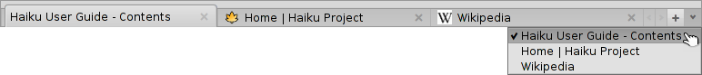

Italiano
Italiano Français
Français Deutsch
Deutsch Русский
Русский Español
Español Svenska
Svenska 日本語
日本語 Українська
Українська 中文 ［中文］
中文 ［中文］ Português
Português Suomi
Suomi Slovenčina
Slovenčina Magyar
Magyar Português (Brazil)
Português (Brazil) English
English WebPositive
WebPositive
| Deskbar: | ||
| Localita: | /boot/system/apps/WebPositive | |
| Impostazioni: | ~/config/settings/WebPositive/ - File di configurazione, cookie, cache e cronologia di navigazione | |
| ~/config/settings/WebPositive/Bookmarks - All bookmarks as single files |
WebPositive, o più brevemente Web+, è il browser nativo di Haiku. Una parte del suo nome è un omaggio al browser del BeOS, NetPositive, l'altra indica la sua base moderna: il WebKit. Questa libreria di rendering HTML è alla base di browser ben conosciuti, come Safari, browser del Mac OS X, e il browser di Google, Chrome. Grazie all'uso di WebKit, libreria in evoluzione continua, Web+ sarà capace di essere sempre pronto alle nuove tecnologie del web.

WebPositive's interface is pretty straight forward: Under a menu bar is another bar with buttons to navigate to the previous and next sites in your browsing history, to stop the loading of a page and (optionally) a button to jump to your starting page.
Then comes the locator field to enter a site's URL.
Below this navigating bar appear the webpages. You can open many pages in parallel by loading them into their own tab.
At the bottom of the window is a status bar, showing the URL of the site being loaded or of the link the mouse pointer is hovering over. While a page is being loaded, a progress bar appears to the right.
 Impostazioni
Impostazioni
From the menu you can open a panel to configure a few essentials of WebPositive.

The first tab deals with general settings: What file or URL serves as a , what's used as a , what is used for stuff you get from the net.
Two pop-up menus let you decide what page to load - if any - when opening a new window or tab.
Via the following checkboxes you can avoid showing the tab bar when there's only one page open anyway. WebPositive's interface can be told to automatically hide in full screen mode, and the mouse pointer can be automatically hidden whenever it's not moved for a while.
Finally, you can decide to include the "Home" button in the navigation bar and set the number of days the browser remembers the sites you have visited in its history.
In the second tab you can choose the fonts used for standard, serif, non-serif and monospaced fonts and set their default sizes.
L'ultima tab viene usata per configurare un server proxy.
Browsing
If you have used any browser before, WebPositive shouldn't provide too many surprises. Instead of going through every menu item and feature, let's have a look at just a few points.
- 
New tabs are created with the + button to the right in the tab bar or, if there's still enough space, by double-clicking into an empty area of it. If there are more tabs open than fit into the bar, the < > scroll-buttons become active, allowing you to scroll the tab bar left and right. The ∨ button to the far right hosts a pop-up menu with all open tabs for even quicker navigation.
Clicking on a link with the middle mouse button opens the page in a new tab in the background.
From the menu you can and of a page. There's also an option to , leaving all images with their original size.
If you switch to full screen mode and have activated the setting to hide the interface, it will disappear after a second. To slide it temporarily back in, simply move the mouse pointer to the top of the screen.

While you type in the locator text field, the browser matches the string to sites you have visited in the past and lists them below the text field. You either keep adding more letters to shorten the list of possible sites, or choose an entry with ↑ or ↓. ENTER will load the page. You can also use the button to the far right which also serves to reload a page.
Strings not recognized as URLs will get looked up with Google, so the locator field doubles as quick shortcut to web searches.Right-clicking opens a context menu which, depending on the object you've clicked on, offers to open the link in a new window or a new tab, download the object etc.
shows a find bar at the bottom to start an in-page search. Matches are highlighted in the page.
Segnalibri
WebPositive's bookmarks are managed as files and folders in ~/config/settings/WebPositive/Bookmarks/. Adding a bookmark will create a new file there. You can quickly open the folder with .

You can change a bookmark's URL, name, title and enter keywords just like with any other file with attributes. Just make sure you have all their columns displayed via Tracker's menu, then select a file, press ALT E and start editing the attribute; change attribute columns with TAB.
You can sort bookmarks into different folders you create yourself.
By using Tracker to manage and navigate bookmarks you can lift its unique features to quickly find what you're looking for.
Activating in Tracker's preferences, you can instantly trim down your list of bookmarks to matches of your filter-string. A few more ↑ or ↓ to move the selection and pressing ENTER opens the site. Make sure to display all attribute columns to have the filter applied to name, title, URL and keywords.
For this to work, all bookmarks should be kept in the ~/config/settings/WebPositive/Bookmarks/ folder and only copies should be sorted into custom subfolders for usage in WebPositive's menu (if at all). Also, actually filling the keywords attribute helps...
Downloads
opens a window listing all past and ongoing downloads:

Currently downloading files are shown with a growing progress bar and, similar to copying files in Tracker, information on the download speed, file size and expected finishing time. Buttons to the right let you and a download, or the file, or its entry from the list. The and buttons at the bottom do this for all entries in this list. "Missing" are files that were deleted in the meantime.
Moving a file that is currently being downloaded to Trash will stop the download. You'll also notice, that its icon becomes "ghosted".
Generally, WebPositive is very tolerant when it comes to managing files with Tracker. Files can be renamed or moved even while they are being downloaded and even after the download is finished, these changes are reflected in the Downloads window.
Ever wondered from what site you downloaded a particular package, image or any other file? You can track that down by opening the file with DiskProbe and have a look at its META:url attribute.
Want to have the URL permanently shown in your downloads folder? Just copy a bookmark into it, have the bookmark's URL attribute column displayed and remove the bookmark again.
Keyboard shortcuts
Here are some useful keyboard shortcuts:
| ALT T | Opens a new tab. | |
| ALT W | Closes the current tab. | |
| ALT N | Opens a new window. | |
| SHIFT ALT W | Closes the current window. | |
| ALT ENTER | Toggles full screen mode. | |
| ALT R or F5 | Refreshes the current page. | |
| ALT H | Opens the home page. | |
| ALT D | Shows/hides the Downloads window. | |
| ALT F | Shows the find bar for in-page searching (hide with ESC). | |
| ALT B | Bookmarks this page. | |
| ALT M | Manage bookmarks, opening the Bookmarks folder. | |
| ALT ← | Previous page in the history. | |
| ALT → | Next page in the history. |